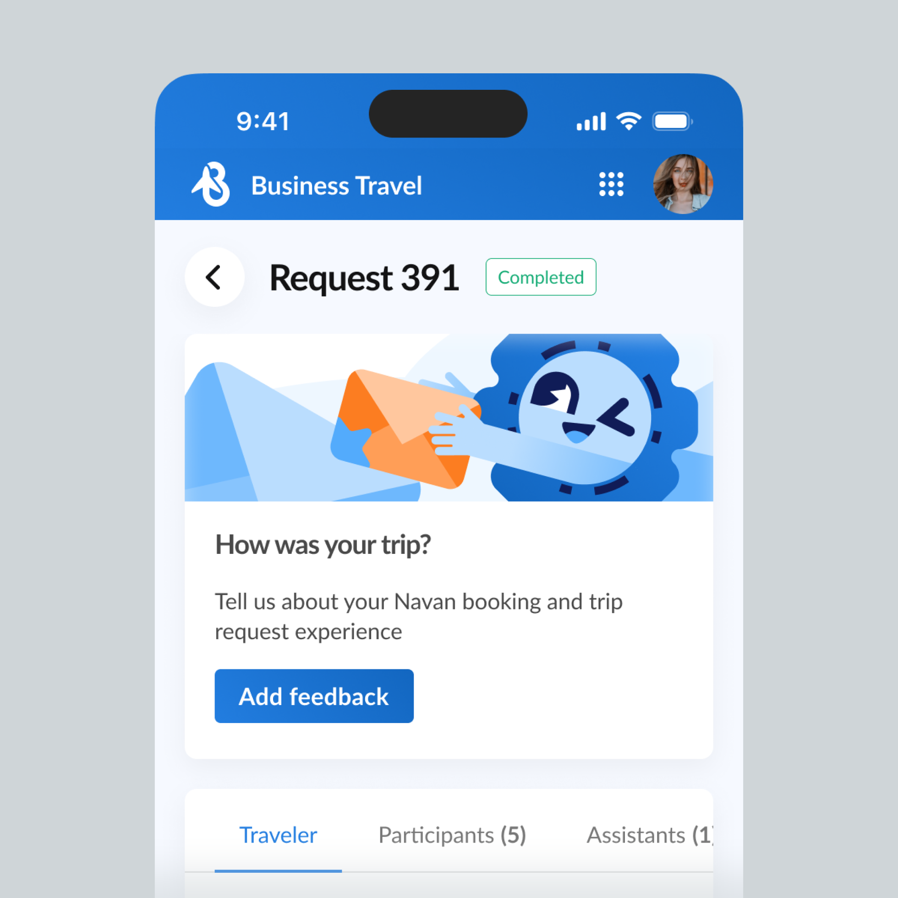
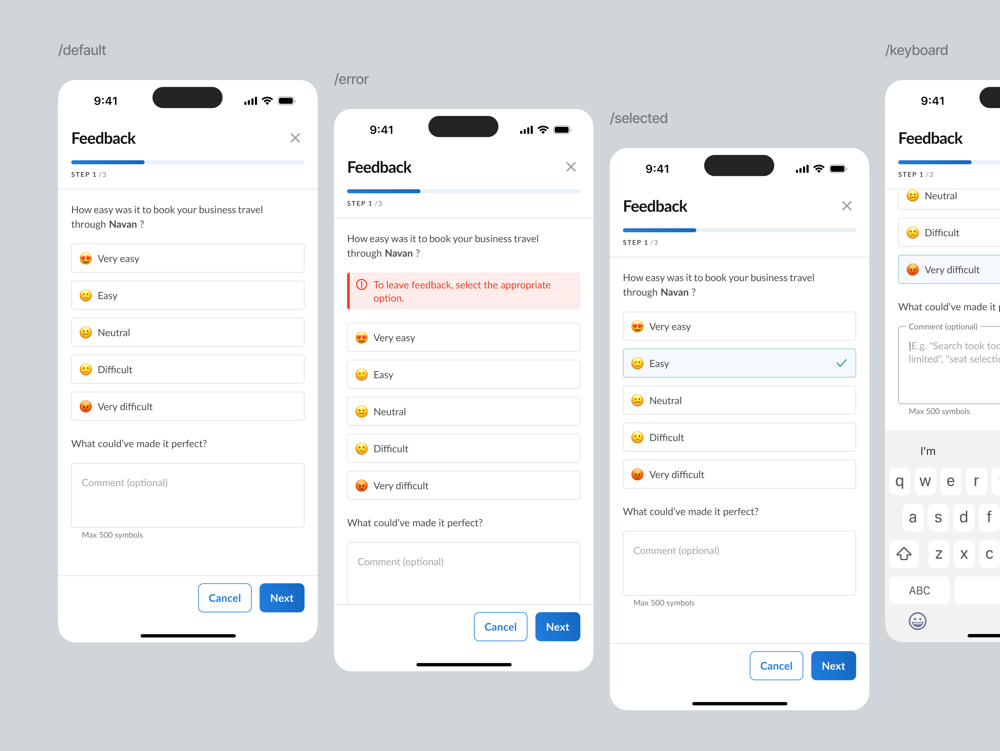
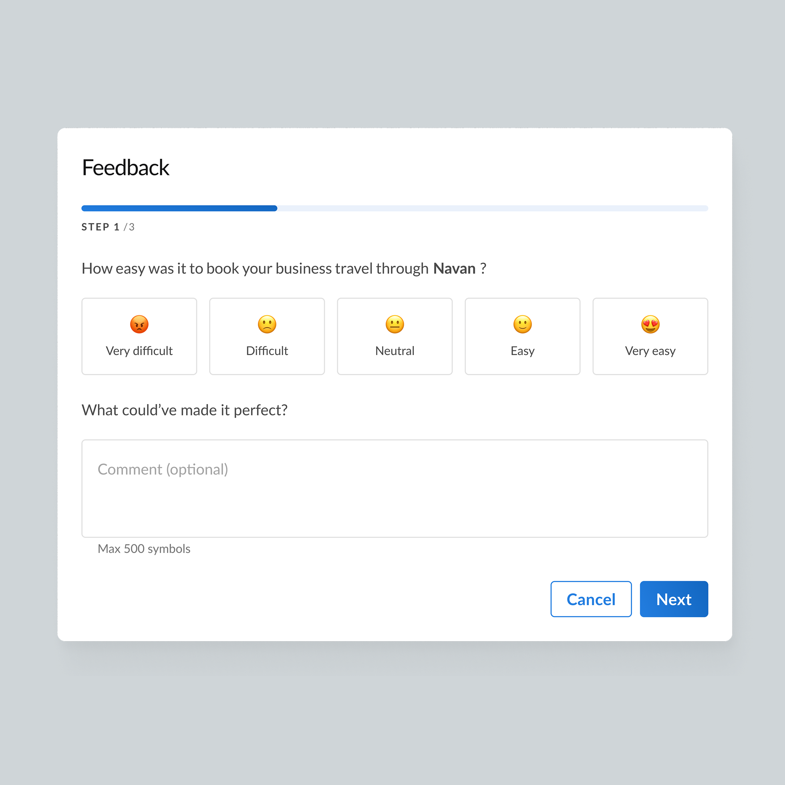
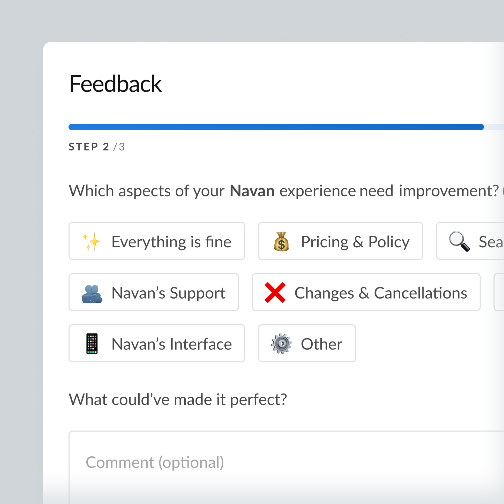

Feedback Form
01. Discover — the pain and the task
Задача — собрать фидбек по новому пользовательскому опыту и бизнес-процессам. Продакт предоставил сырой список вопросов с вариантами ответов. Я начала с анализа: посмотрела, как похожая форма реализована в соседнем продукте компании. Копировать её не получилось — у нас было три вопроса с большим количеством вариантов в каждом. Использование того же лейаута превратило бы модалку в бесконечный скролл.
Для форм обратной связи критически важна перцепция времени: пользователь должен чувствовать, что это займет «пару минут», а не воспринимать это как длинный опрос. Если форма выглядит длинной, конверсия падает ещё до первого клика. Запрос на «просто сверстать вопросы» превратился в задачу по проектированию опыта, который не отпугнет пользователя.

02. Define — goal and constraints
Цель: спроектировать форму фидбека, которая максимизирует процент заполнения (response rate) и повысит качество текстовых ответов.
Ограничения: нельзя просто скопировать решение из соседнего продукта (слишком длинно), нужно адаптировать интерфейс под десктоп и мобильные устройства, и при этом сохранить все необходимые для бизнеса вопросы. Главная задача оформилась как поиск баланса: как вместить нужный объем информации, не создавая у пользователя ощущения «длинного опроса».
03. Explore — the trade-off between length and perception
Я выделила два полярных подхода и оценила их риски:
- Показать всё компактно на одном экране. Риск: форма выглядит как длинный список, пользователь пугается объема и закрывает модалку.
- Разбить на шаги. Риск: пользователь может подумать, что «впереди ещё больше шагов», и устанет от бесконечных кликов «Далее».
Я выбрала второй вариант — разбиение на шаги с видимым прогресс-баром. Исследования показывают, что видимость оставшегося пути снижает тревожность эффективнее, чем просто компактность. Пользователь видит конечную точку и понимает, сколько усилий осталось, вместо того чтобы гадать. Также я предложила продакту объединить часть вопросов, чтобы сократить визуальный шум, и добавила опциональное поле для комментария к каждому шагу, так как вопросы касались совершенно разных зон опыта.

04. Design — the solution
Форма представляет собой пошаговую модалку с прогресс-баром и анимацией переходов между шагами. На десктопе селектор оценок — это горизонтальный ряд из 5 эмодзи-карточек (эффективное использование ширины экрана). На мобильном — вертикальный список с иконкой и подписью в каждой строке, так как 5 карточек в ряд на узком экране потеряли бы читаемость. Каждый шаг содержит умные помощники: тултипы с примерами для неоднозначных категорий и динамический плейсхолдер в поле комментария, который меняется в зависимости от выбранной оценки. Если пользователь пытается пропустить обязательный первый шаг, срабатывает мягкая валидация.

05. Key decisions
- Шаги + прогресс-бар вместо длинной простыни. Компромисс между компактным видом и пошаговым прохождением. Видимая дистанция до конца снижает тревожность лучше, чем просто сжатый текст, потому что пользователь видит финишную черту.
- Контекстные тултипы с примерами. Категории вроде «Search & Booking» или «Booking process» открыты для интерпретации. Я добавила инфо-тултипы с конкретными примерами («Hotels», «Flights & Transport»), чтобы снизить шанс случайного выбора или пропуска категории, которую пользователь не до конца понял.
- Динамический плейсхолдер комментария. После выбора варианта плейсхолдер обновляется на релевантный пример («Search took too long», «hotel options were limited»). Это направляет пользователя и улучшает качество свободного текста, вместо того чтобы просто помечать поле как «опциональное».
- Мягкая валидация обязательного первого шага. Попытка перейти дальше без оценки на Шаге 1 вызывает предупреждающий баннер, а не просто дизейблит кнопку «Далее». Пользователь сразу понимает, что от него требуется, вместо того чтобы гадать, почему интерфейс не реагирует.
- Адаптивный селектор под платформу. Десктоп получает горизонтальные карточки (используем ширину), мобильный — вертикальный список с иконками (сохраняем читаемость на узких экранах).


06. Deliver & reflect
Форма недавно ушла в прод, поэтому количественных данных по response rate и качеству комментариев пока нет. Ожидаемый эффект — рост процента завершения формы.
Что я забираю из этого кейса. В формах фидбека дизайн работает не с реальным временем заполнения, а с восприятием времени пользователем. Прогресс-бар и разбивка на шаги — это не просто UI-паттерны, а инструменты управления тревожностью. Я планирую вернуться к этому кейсу, когда накопятся данные использования: метрики покажут, насколько точно гипотеза о снижении когнитивной нагрузки через пошаговость сработала на реальных пользователях.